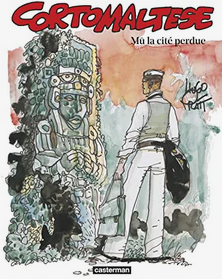

Mû est le dernier album de la série Corto Maltese écrit et dessiné par Hugo Pratt. Comptant 174 pages, il est prépublié en France en 1989, et ne paraîtra en album complet qu'en 1992. Cette histoire est le résultat de l'envie de Pratt de relancer Corto dans une aventure exotique, le dernier épisode s'étant déroulé en Suisse. Il écrit cette histoire suite à un grand voyage en Amérique Latine en 1988.
Mû se déroule en 1925, sur une île probablement imaginaire, intitulée l'île Quetzal. Corto, avec une grande partie de ses connaissances rencontrées en Amérique du Sud lors de Sous le signe du Capricorne et de Corto toujours un peu plus loin: Levi Colombia, Bouche dorée, Soledad Lokäarth, le caraïbe Jésus-Marie, Tristan Bantam et Jeremiah Steiner, ainsi que Raspoutine, à la recherche du continent perdu de Mû. Dans cette histoire, construite à la manière d'un rêve, les allusions culturelles se mélangent: civilisations précolombiennes, contients perdus, mytholgie grecque, explorateurs de l'Amérique templiers, sardes ou irlandais, légendes celtiques... Corto passe d'un récit à l'autre de manières surréalistes, qui ajoutent un certain charme à l'histoire, au point qu'on se demande à la fin si tout cela n'était pas un rêve, certe très érudit, mais un rêve néanmoins.
